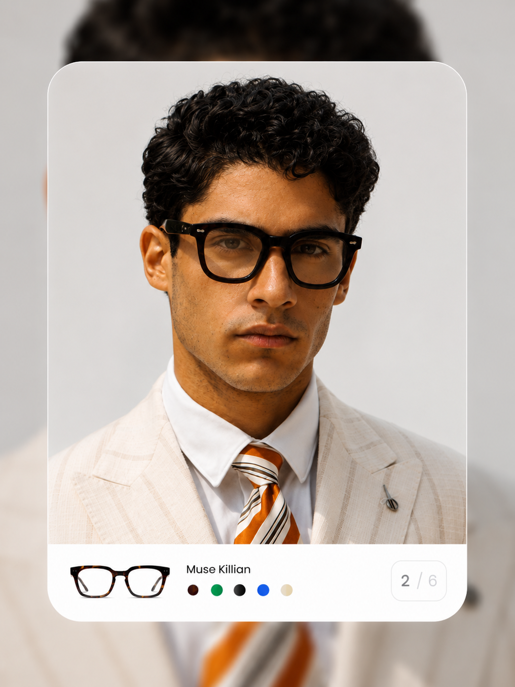

let's find your perfect pair.
just a few quick steps and our face-shape expert will hand-pick the glasses made for you.
tell us your style
choose your colours
scan or upload a photo
what style are you
looking for?
this helps us narrow down your shapes.
which colours
speak to you?
pick up to 3 lens tints you're most drawn to.
light blue
green
brown
grey
pink
yellow
purple
clear
0 / 3 selected
continue with our ai feature for better results?
your privacy matters. we never share your data.

we'll take it from here.
our face-shape expert will review your scan and send a personal recommendation.
request received
best regards,
seetruebrothers
thank you.
our face-shape expert will review everything you shared and follow up shortly with your personal recommendation for the perfect pair of seetrueglasses.
a confirmation email is on its way to you.
we may reach out on whatsapp for a quick fit check.
seetruebrothers